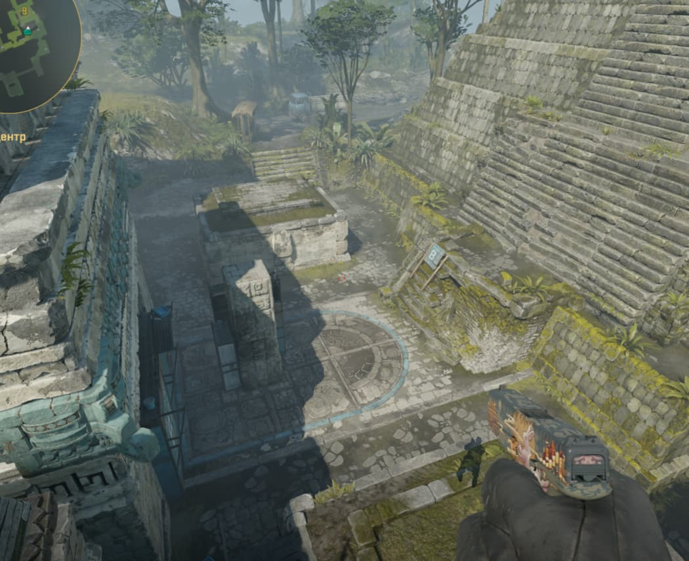

← НАЗАД
ANCIENT — Т ПОЗИЦІЇ
📍
Порада для телефонів:
Щоб бачити сторінку точно так само, як на комп'ютері, відкрий меню браузера (3 крапки) та постав галочку «Версія для комп'ютера».
Розкид A site
Розкид Mid

Розкид B site